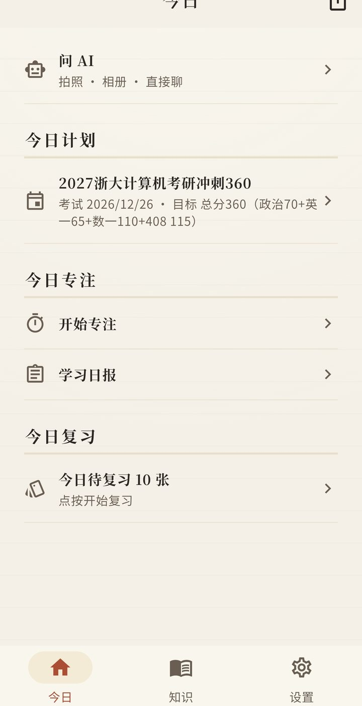
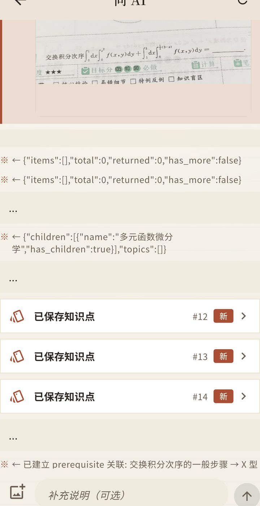
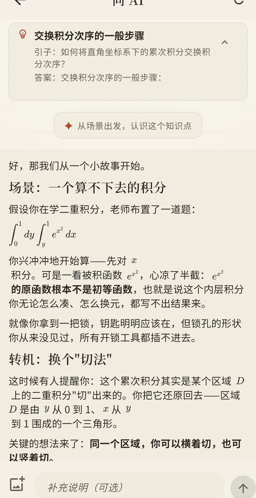
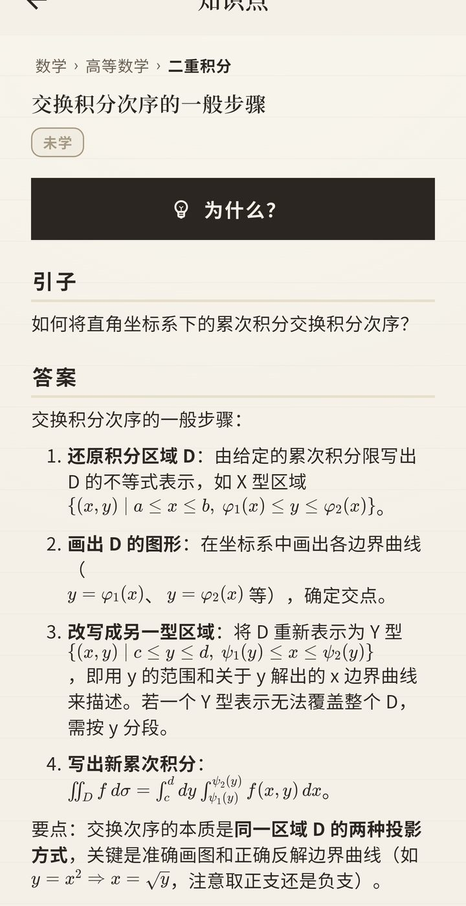
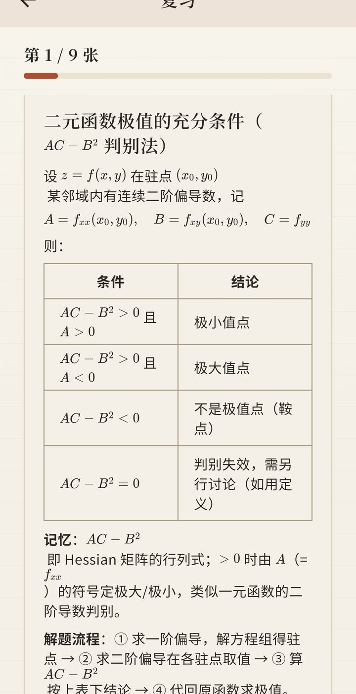
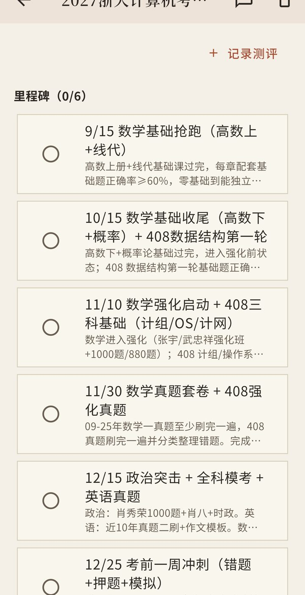
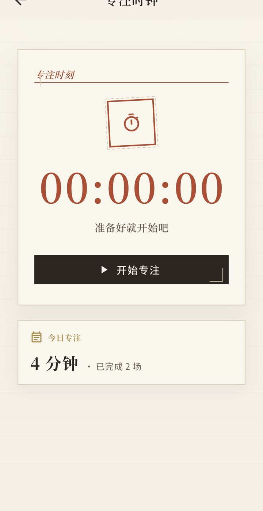
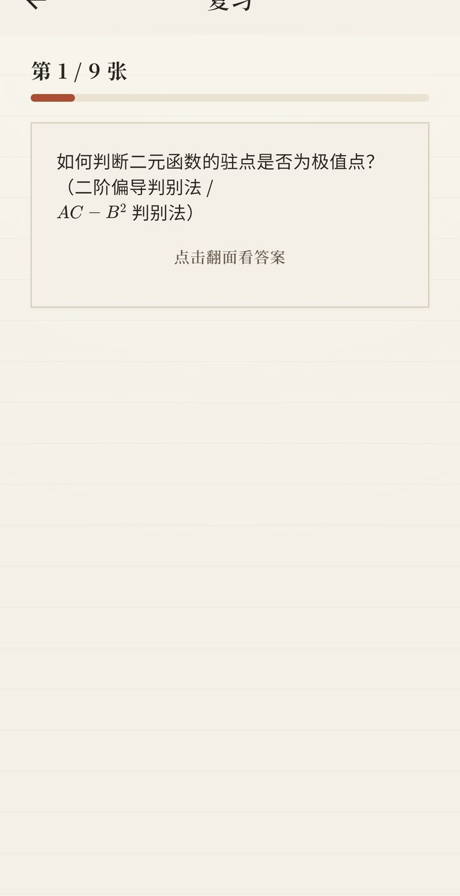

苏格拉底式学习 × 遗忘曲线复习
时习是一个把「被问到懂」和「在该复习的时候复习」做成日常习惯的学习 App。 拍题问 AI、按记忆曲线复习、专注打卡 —— 你带 AI，时习出闭环。



时习的一切功能，都从这两块基石上长出来。
苏格拉底从不直接给答案，只是提问 —— 一个接一个，顺你的回答往下走，直到你自己把道理想通。 被动听懂 ≠ 真懂；自己走完的推理链路，才最难遗忘。
在时习里，每个知识点都有一枚「为什么？」按钮。AI 不给结论，只从具体场景出发反问你、引导你 —— 卡住给提示，跑偏拉回来，直到你说出那个「啊哈」。
1885 年，艾宾浩斯画出了著名的遗忘曲线：刚学完的内容几小时内快速遗忘，一天后可能只剩三分之一。 复习不是越多越好，而是越准越好 —— 在遗忘临界点复习一次，记忆重置并加固。
每个功能都为「学懂 + 记住」服务，没有多余的东西。
拍一道题、选一张图，或直接打字。AI 帮你拆思路、给解析，还能把涉及的知识点自动沉淀进你的知识库。
按学科分类沉淀你学过的每个知识点，附「引子—答案—关联」。一眼看清自己学过什么、还差什么。

任意知识点点一下「为什么？」，AI 用提问带你从场景走到底层原理。想通了，才算懂。
每天只复习到期的几张卡。四档自评 —— 忘了 / 困难 / 良好 / 简单 —— FSRS 自动排好下一次的时间。

告诉时习考试日期与目标，AI 帮你把漫长的备考期拆成一个个可执行的节点，月历打卡看得见进度。

一键开始专注，知识点自动关联到本场。结束自动汇总成当天学习日报，还能生成小红书风打卡文案。

← 横向滑动查看更多 →

Android 用户前往 GitHub Releases 获取安装包。
时习使用你自备的 AI 接口（设置里填一次即可），提问全程走你信任的模型。
数据全部本地 SQLite 存储，不上传。反馈与建议欢迎提 Issues。